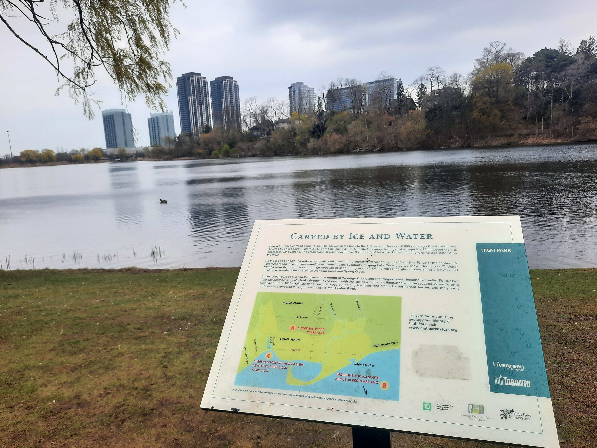
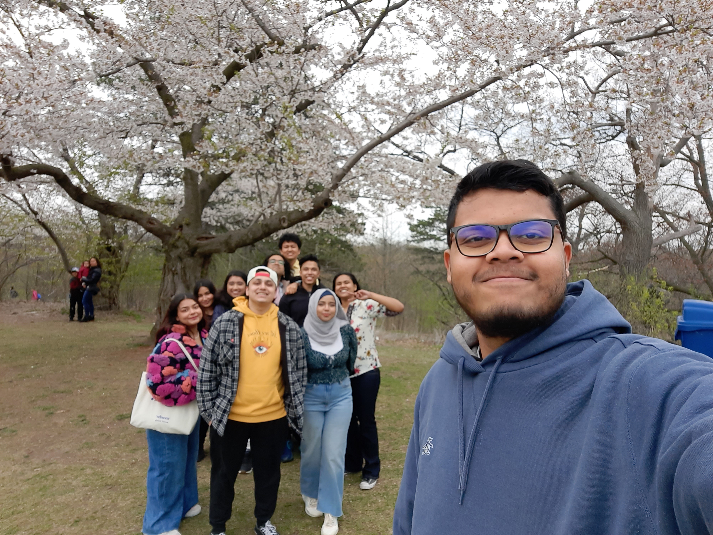
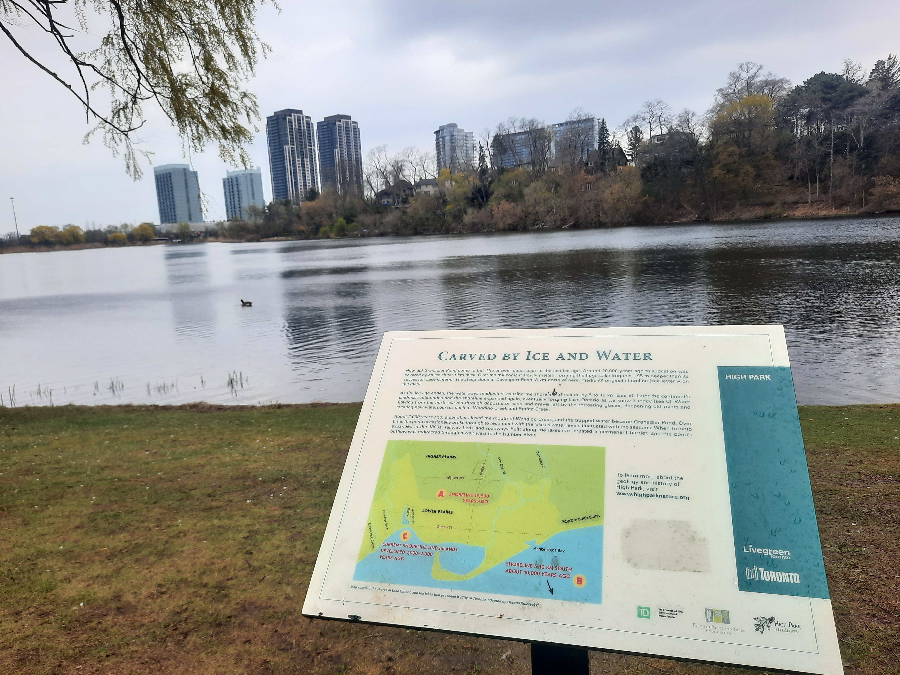
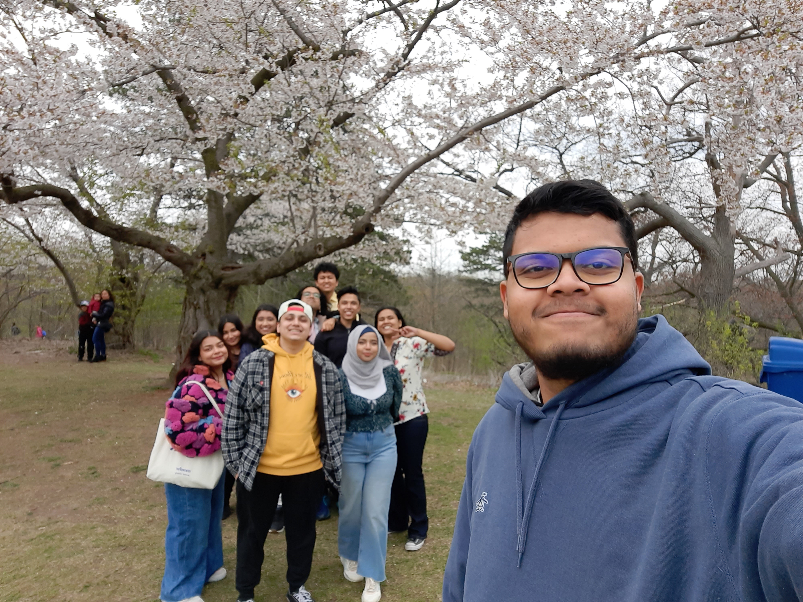

Experience the Magic of Sakura Blossoms in High Park
High Park, located in the heart of Toronto, is renowned for its captivating Sakura Blossom display during the spring season. The park's enchanting cherry blossoms transform the landscape into a sea of delicate pink and white petals, creating a mesmerizing spectacle for visitors.


 



Witnessing the Sakura Blossoms in High Park is a magical experience. The fragrant blossoms, combined with the serene surroundings, create an ideal setting for picnics, leisurely strolls, and the celebration of nature's beauty.
Key Highlights:
- Peak Bloom Period: Plan your visit during late April to early May for the best Sakura blossom display.
- Picnic Areas: Enjoy a delightful picnic under the blooming cherry trees in designated picnic areas.
- Cultural Events: High Park often hosts cultural events and festivals during the Sakura blossom season.
Tips for Visitors:
- Arrive early to avoid crowds and fully appreciate the tranquility of the Sakura display.
- Bring a camera to capture the breathtaking moments and the vibrant colors of the blossoms.
- Check the park's website for any scheduled events or festivals during the Sakura season.
High Park's Sakura Blossom experience is a celebration of nature's fleeting beauty. Join the annual spectacle and immerse yourself in the enchanting world of cherry blossoms.